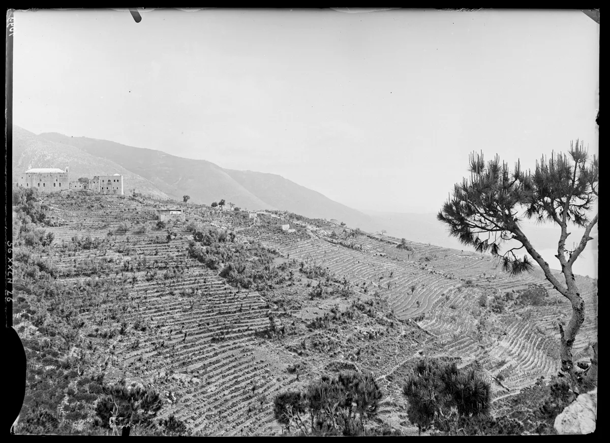

Blessed Abouna Yaacoub
Blessed Abouna Yaacoub Haddad (1875-1954) was a Lebanese Capuchin friar who walked the length of Lebanon preaching, founded the Franciscan Sisters of the Holy Cross, and filled the country with schools, hospitals and orphanages for the poor. He was beatified in Beirut on June 22, 2008.

From Ghazir to the Capuchins
Jacques Ghazir Haddad was born on February 1, 1875, in the mountain village of Ghazir, the third of five children. He studied Arabic, French and Syriac at the College de la Sagesse in Beirut, then went to Alexandria in 1892 to teach Arabic - and there, far from home, heard the call to the priesthood. The next year he entered the Capuchin convent of Khashbau, back in his own hills, and on November 1, 1901, he was ordained a priest in Beirut. Lebanon knew him simply as Abouna Yaacoub - Father Jacob.
The Preacher of Lebanon
From 1903 to 1914 he walked Lebanon on foot with a knapsack on his shoulder, preaching in village after village - and became known as the Apostle of Lebanon. He preached beyond it too, in Syria, Palestine, Iraq and Turkey, according to the Holy See biography.
The Cross on the Hill
In 1919 he bought a piece of land on the hill of Jal el Dib, north of Beirut, built a chapel to Our Lady of the Sea, and raised a great Cross beside it - the landmark that gave his works their name. To serve the sick and the poor who began arriving at the Cross, he founded the Franciscan Sisters of the Holy Cross of Lebanon in 1920.
Then came the flood of works: schools that, according to the Capuchin order, numbered 230 for 7,500 students by 1910; the House of the Sacred Heart for orphan girls at Deir el-Kamar (1933); the Hospital of Our Lady for the aged and chronically ill (1948); St Joseph's Hospital (1949); and in 1950 a psychiatric hospital at the Cross itself, St Anthony's House for beggars, and Providence House for homeless girls.
His Last Years
He spent himself without reserve. Worn by vigils, travel and illness - nearly blind, and finally stricken with leukemia - he stayed lucid to the end, his last hours an unbroken chain of prayers to the Cross and the Virgin Mary. He died on June 26, 1954, after a life dedicated to prayer and care for others.
Beatified in Beirut
His cause opened in 1979, and after the Church's investigation of a miracle attributed to his intercession, Pope Benedict XVI approved his beatification. On June 22, 2008 - in Beirut, in the country he had walked end to end - Cardinal Jose Saraiva Martins, Prefect of the Congregation for the Causes of Saints, declared him Blessed. The Capuchin order keeps his memory on June 26, the day of his death.
Frequently Asked Questions
Who was Abouna Yaacoub?
A Lebanese Capuchin friar (1875-1954) - preacher, founder of the Franciscan Sisters of the Holy Cross, and builder of hospitals, schools and orphanages across Lebanon. In English sources he also appears as Jacques Ghazir Haddad or Blessed James Haddad.
Why is he called the Apostle of Lebanon?
Because from 1903 to 1914 he walked the whole country on foot preaching the Gospel, village by village - a ministry so identified with Lebanon that the name stuck for the rest of his life.
What did he found?
The Franciscan Sisters of the Holy Cross of Lebanon (1920), plus a network of works: hospitals, a psychiatric hospital, orphanages, soup kitchens, and 230 schools by 1910.
When was he beatified?
On June 22, 2008, in Beirut, by Cardinal Jose Saraiva Martins on behalf of Pope Benedict XVI. His memorial is kept on June 26.
Where did his work at the Cross begin?
At Jal el Dib, north of Beirut, where he built the chapel of Our Lady of the Sea and raised a great Cross in 1919.
Is he a saint yet?
He is Blessed - beatified in 2008 after a miracle attributed to his intercession was approved. This page describes his 2008 beatification, not a canonization.
Keep Reading
Read about the Massabki Brothers, three Maronite lay martyrs, and more witnesses from the same mountains: St Nimatullah, Saint Charbel's teacher; St Rafqa, the blind nun of Lebanon; and the full story of Saint Charbel.
Sources
- Holy See: Bl. Jacques Ghazir Haddad (1875-1954) - official biography for the 2008 beatification
- Holy See: Apostolic Letter for the beatification of Jacques of Ghazir (June 21, 2008)
- Order of Friars Minor Capuchin: Blessed James Haddad - order's own memorial page
- Wikimedia Commons / Bibliotheque nationale de France: Ghazir and the Capuchin convent, Andre Salles, 1893 (public domain)